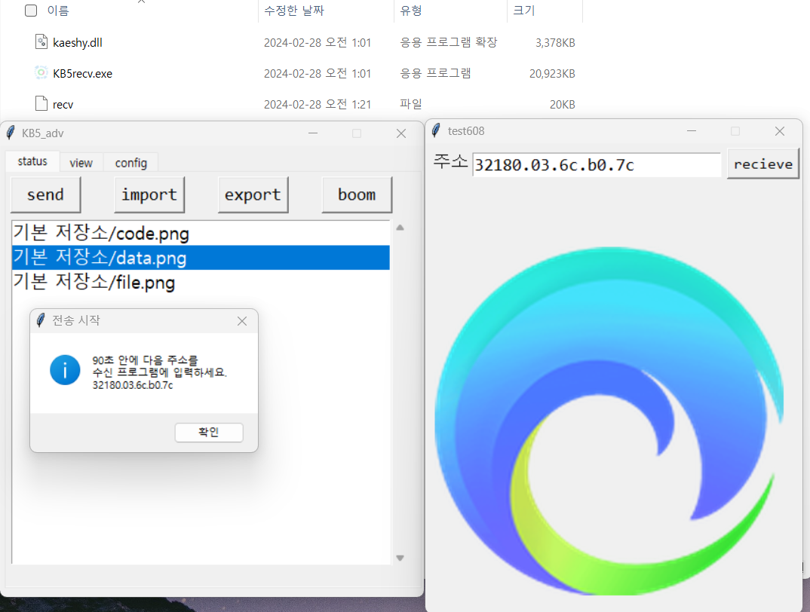
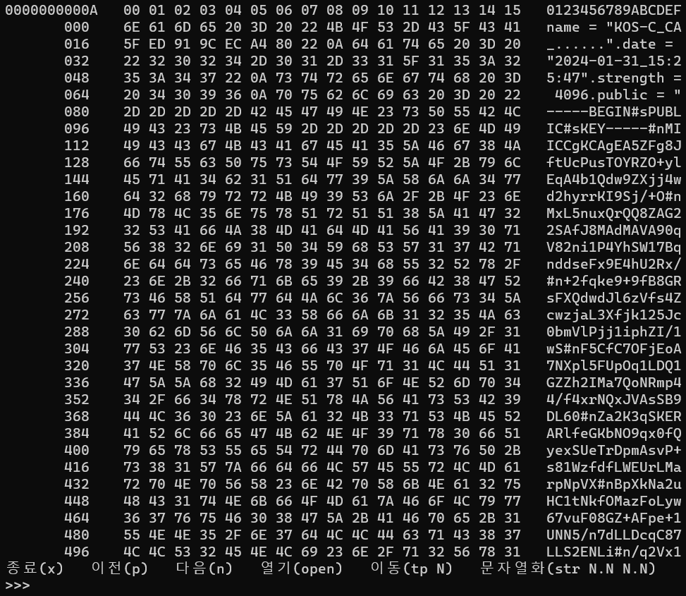
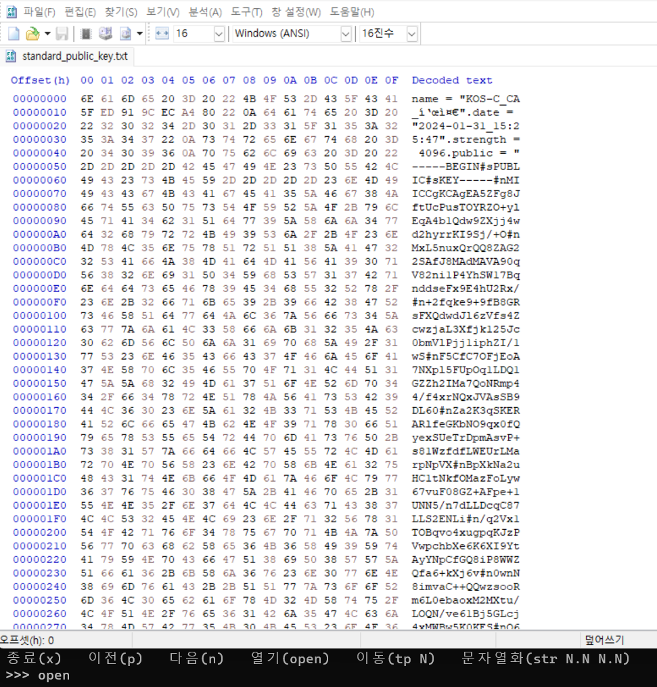
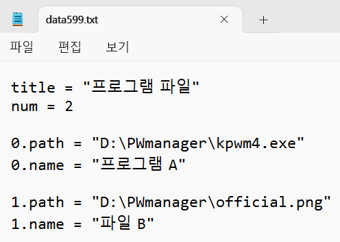
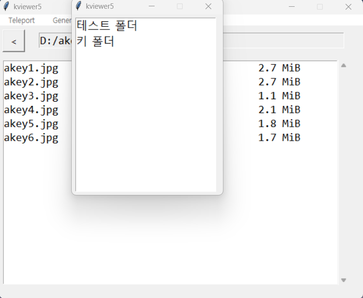
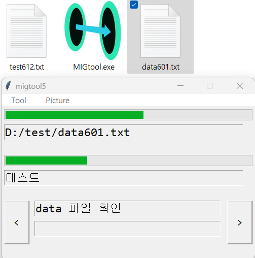

Gen5 Ind pgr
시작 매니저에 의존하지 않는 다양한 프로그램에 대한 설명서입니다.
대부분 개발자용 특수 목적 프로그램으로 구성되어 있습니다.
시작 매니저에 의존하지 않는 다양한 프로그램에 대한 설명서입니다.
대부분 개발자용 특수 목적 프로그램으로 구성되어 있습니다.
키 파일 관리 프로그램입니다.
하드웨어 접근을 허용한 상태라도 어느 정도의 보호가 가능합니다.
이 프로그램은 복잡하니 보안에 관심이 있는 경우에만 github 페이지를 참고하여 사용하시기 바랍니다.
발신이 KB5adv, 수신이 KB5recv입니다.
KB5adv에 대해 설명합니다. KB5recv는 수신 테스트용입니다.
발신 측이 암호화된 파일을 관리합니다. 저장소에 새 파일을 추가하거나 내보낼 수 있습니다.
수신 측은 발신 측으로부터 암호화된 파일에 대한 주소와 키를 소켓 통신으로 전달받습니다.
보조기억장치에 평문 파일을 남기지 않고 키 파일을 전달할 수 있습니다.
로그인 화면입니다.
상단에 키 파일 직접지정 / 수신지정 UI가 있습니다.
설정 화면입니다.
자세한 내용은 github의 readme.txt를 참고하세요.

저장소에 3개의 파일을 넣어놓은 상태입니다.
키 파일은 반드시 사진 형식일 필요는 없습니다.
view에서는 만약 선택한 키 파일이 사진이라면 그것을 볼 수 있습니다.
송수신 테스트 모습입니다.
프로세스 간 통신으로 키 파일을 전달할 수 있습니다.
간단한 이진 데이터 뷰어입니다.
파일을 열람한 모습입니다.
p/n으로 이전/다음 페이지로 이동할 수 있습니다.
왼쪽 상단에 페이지 번호가 있습니다.
1KiB 단위로 나뉘며, A/B로 구분되어 한번에 512B가 표시됩니다.
파일의 일부분을 유니코드 문자열로 변환해 표시할 수 있습니다.
open 명령어로 HxD 등 다른 헥스 뷰어로 연결할 수 있습니다.
프로그램 또는 파일을 실행합니다.
데이터 파일(data599.txt)을 작성해야 합니다.
프로그램 경로와 표시 이름을 작성하세요.
해당 이름을 더블클릭하면 실행됩니다.
전자서명 도구입니다.
자세한 사항은 github 페이지의 readme.txt를 확인하세요.
이 전자서명 시스템이 Gen5 프로젝트에서 사용됩니다.
파일 탐색기 보조입니다.
파일 정보 보기와 더블클릭 실행이 가능합니다.
설정 파일(settings.txt)을 조작하세요.
바로가기 경로 설정을 할 수 있습니다.
폴더와 파일들이 표시됩니다.
teleport -> 바로가기 메뉴입니다.
설정 파일에 적어둔 폴더로 이동할 수 있습니다.
teleport -> 수동지정 메뉴입니다.
직접 폴더 경로를 적어서 이동합니다.
순차적 절차를 기록하고, 다시 돌려볼 수 있는 프로그램입니다.
보통 새 컴퓨터에서의 환경 구축에서 사용합니다.
테스트 절차 기록 예시입니다.
절차 보기 외에도 패키징, 스크린샷 등 부가 기능을 지원합니다.
현재 챕터/절차/세부절차와 진행도가 표시됩니다.
절차 텍스트 파일을 열면 data601.txt로 진행 상황이 저장됩니다.
data601.txt를 열면 진행 상황이 복구됩니다.
시작 프로그램 폴더에 설치됩니다.
3일에 1번, 새벽 3시 30분에 컴퓨터를 자동 재부팅합니다.
시작 프로그램 폴더에 설치됩니다.
컴퓨터가 부팅될 때마다 바탕화면 powerlog.txt에 시작 시각을 기록합니다.